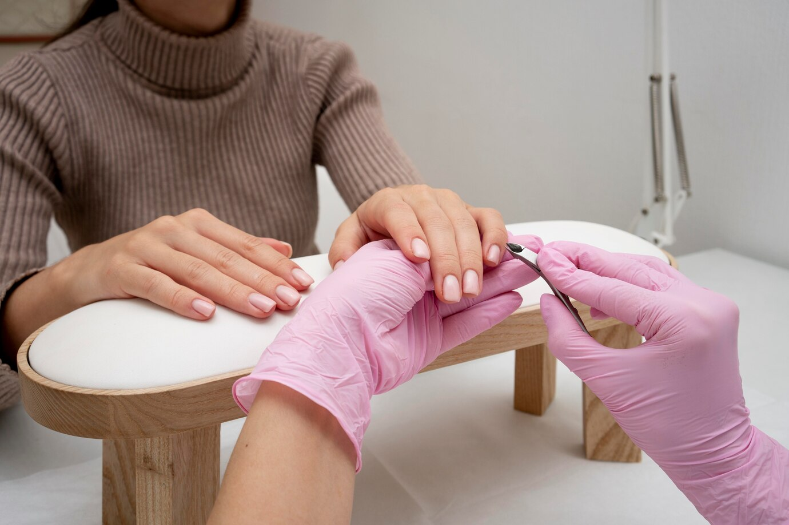

Ногти — это защищающие пластинки, которые располагаются на концах пальцев рук и ног. Они состоят из кератина, прочного белка, который также есть в волосах и коже.
Ногти — это защищающие пластинки, которые располагаются на концах пальцев рук и ног. Они состоят из кератина, прочного белка, который также есть в волосах и коже.
Это твёрдое полупрозрачное образование из рогового слоя эпидермиса. Пластину разделяют на корень, тело и свободный край. В норме она имеет форму неправильного прямоугольника, выпуклая, гладкая и всегда прозрачная. Ногтевые валики
Внешняя часть ногтя с трёх сторон ограничена ногтевыми валиками — одним проксимальным (задним) и двумя латеральными (боковыми).
КутикулаРоговой слой валика, переходящий на ногтевую пластинку. Кутикула водонепроницаема и защищает матрикс от проникновения инородных веществ и микроорганизмов
Матрикс или корень ногтя.Это ростковая зона, откуда начинается и пластинка, и ложе ногтя. Матрикс лежит под задним ногтевым валиком. Небольшая часть его выступает из-под валика в виде лунки.
Ногтевое ложеЛежащий под ногтевой пластинкой участок неороговевающего эпидермиса. Сеть капилляров, расположенных в продольных бороздах ложа, питает ногтевое ложе на всём его протяжении.
У человека ногти начинают развиваться на 3-м месяце внутриутробной жизни, вследствие медленного роста достигают концов пальцев только к моменту рождения. В среднем за неделю ногти рук отрастают на 1–2 мм, а ногти ног — на 0,25–1 мм.
Влияние факторов на скорость ростаНа скорость роста ногтя влияют множество факторов: возраст, пол, кровоснабжение, питание, физиологическая нагрузка. Например, ногти на рабочей руке растут быстрее, чем на нерабочей; на руках быстрее, чем на ногах; с возрастом скорость роста ногтей замедляется.
 Ножницы для ногтей
Ножницы для ногтей
 Кусачки
Кусачки
 Пилочка
Пилочка
 Пушер
Пушер
 Бафы
Бафы
 Пинцет
Пинцет
Санитария и гигиена в маникюре важны для обеспечения безопасности процедуры и здоровья клиентов.
Некоторые правила поддержания гигиены на рабочем месте мастера маникюра:
Необходимо протирать все поверхности и подметать пол. Влажную уборку проводят не менее двух раз за смену с использованием специальных дезинфицирующих веществ. Генеральную уборку проводят еженедельно.
Если многоразовый инструмент может травмировать клиента, его обрабатывают после каждого посетителя. Инструменты помещают в дезраствор, затем промывают под струёй проточной воды. После высыхания инструменты стерилизуют.
К ним относятся салфетки, простыни для педикюрного кресла, ватные диски, полотенца для ног и рук.
Их используют до и после процедур маникюра и педикюра. Это могут быть жидкости, дезинфицирующие салфетки и антибактериальные гели или мыло.
К ним относятся шапочки, одноразовые перчатки, маски, защитные очки и экраны
Деятельность маникюрного кабинета регулируется Санпин. Мастер маникюра должен иметь личную санитарную книжку, которая подтверждает, что у него нет инфекционных и других заболеваний, опасных для клиента
Этика и профессионализм мастеров маникюра играют ключевую роль в успешном взаимодействии с клиентами.
Мастер должен учитывать предпочтения клиента, проявлять сочувствие и внимательность.
Необходимо защищать личные границы и не обсуждать с коллегами полученные от клиента данные.
Мастер должен объяснять все риски и возможности, честно представлять результаты.
Следует проявлять доброжелательность, корректность и такт.
Если клиент не расположен к общению, не стоит докучать его вопросами и рассказами. Если клиент хочет общаться, нужно его поддержать.
Профессионализм в маникюре включает в себя не только технические аспекты работы с ногтями, но и умение поддерживать положительный имидж, работать с клиентами и соблюдать принципы этичного общения
Пунктуальность. Мастер должен оценивать своё время и время клиента, приходить на работу вовремя и не нарушать график приёма
Умение слушать и поддерживать беседу. В таких беседах инициативу должен иметь клиент, но мастер должен уметь поддерживать и направлять разговор.
Адаптация подхода к каждому клиенту. Мастер должен уметь подстраивать своё поведение и подход к каждому клиенту в зависимости от его потребностей и особенностей
Европейский маникюрПодходит для чувствительной и негрубой кожи. Нужно размочить ногтевую пластину в воде и удалить валик специальной палочкой. Также можно использовать специальный ремувер: покрыть кутикулу средством, оставить на время, указанное в инструкции, остатки удалить при помощи салфетки. Затем палочкой отодвинуть кожу к ногтевому валику и снять отслоившуюся часть.
Классический маникюрСчитается более профессиональным, требует специальной подготовки, внимательности и аккуратности. Нужно обработать инструменты, руки и ногтевые пластины антисептическим средством. Затем распарить пальцы в ванночке для рук, можно добавить ароматическое масло или морскую соль. Высушить руки при помощи полотенца. Палочкой или пушером отодвинуть кутикулу и тщательно очистить ногтевую пластину. Удалить кутикулу при помощи маникюрных ножниц или щипцов. Начинать с боков и заканчивать на середине.
Также можно убрать кутикулу без использования ремувера или обрезного инструмента:
Важно удалять кутикулу аккуратно, чтобы не поранить кожу. После процедуры нужно нанести специальный заживляющий крем и помассировать ногтевое ложе.
При обрезке ногтей важно, чтобы они соответствовали природной форме кончиков пальца. Длину ногтя определяет видимый белый ободок. Если случайно отрезать или сломать ноготь слишком коротко, нужно тщательно подпилить его по углам, чтобы не оставлять острых краёв.
Для стрижки ногтей обычно используют специальные щипчики или ножницы. Обрезание производят только кончиками инструмента. Обрезанная поверхность должна представлять собой гладкую равномерную линию без выступающих краёв.
Подстригать и подпиливать ногти рекомендуют не реже одного раза в десять дней.
Полировка и шлифовка ногтей — это части маникюрной или педикюрной процедуры, которые помогают улучшить эстетику и здоровье ногтей.
Полировка позволяет сгладить чешуйки кератина и удалить пыль, придаёт ногтям гладкость и блеск. Процедура обеспечивает качественное сцепление ногтевой поверхности со всеми видами декоративных покрытий. Для полировки используют пилки, бафы, губки, насадки, аппарат для маникюра, полировальные машинки.
Таким образом, разница между полировкой и шлифовкой в том, что первая направлена на придание блеска, а вторая — на выравнивание поверхности.
Массаж рук полезен для ухода за кутикулой, а также для поддержания упругости кожи рук и укрепления ногтевой пластины. Чтобы сделать массаж, нужно:
Нанести на руки немного крема или косметического масла
Тщательно вмассировать средство до полного впитывания.
Особое внимание уделять массажу пальцев, втирая крем по направлению от кончиков к ладони круговыми движениями.
Существует специальный массаж ацуи, который входит в процедуру японского маникюра. Он способствует улучшению кровообращения и впитыванию увлажняющих составов.
Удаление старого покрытияДля этого можно использовать специальную жидкость или обычный ацетон. Ватный диск или палочку смочить в средстве и приложить к пластине на 10–20 секунд. Затем аккуратно стереть лак, двигаясь от основания ногтя к кончику
Очистка поверхности от загрязнений и обезжириваниеЭто поможет новому лаку лечь ровно и держаться дольше. Можно использовать обезжириватель или спирт, чтобы протереть им каждую пластину.
Коррекция ногтей Если ногти нуждаются в коррекции, подрезать их маникюрными ножницами или кусачками. Затем с помощью пилки придать им желаемую форму. Движения пилкой нужно производить в одном направлении, чтобы избежать микротрещин.
Полировка поверхностиЧтобы лак лучше держался на ногте, необходимо отполировать его поверхность. Для этого использовать полировочную пилку или баф. Пройтись инструментом по всей поверхности ногтя, удаляя мелкие неровности и шероховатости.
Нанесение праймераЭто средство, используемое в маникюре и наращивании ногтей, которое обеспечивает сцепление искусственного материала с ногтевой пластиной. Оно приподнимает кератиновые чешуйки ногтя, проникает в него и затвердевает, создавая шероховатую поверхность для лучшей сцепки.
Нанесение базового покрытия — один из важнейших этапов маникюра. Базовое покрытие обеспечивает ровную и прочную основу, благодаря которой гель-лак держится несколько недель.
Затем нужно обезжирить ногти с помощью клинсера
Лучше использовать для этого салфетки без ворсов, так как мельчайшие ворсинки могут остаться на поверхности. Клинсер убирает пыль и мусор, хорошо обезжиривает ногтевую пластину и обеспечивает более прочную сцепку с базовым покрытием
После обработки клинсером необходимо нанести дегидратор
средство, которое подсушивает поверхность ногтей. Его наносят кисточкой тонким слоем. В течение 30 секунд дегидратор испаряется с ногтевой пластины. Сушить его в УФ-лампе не нужно.
Затем можно приступать к покрытию базой:
Лучше наносить базовое покрытие двумя тонкими слоями, чем один раз более плотным. После того как базовое покрытие высушено, можно приступать к нанесению гель-лака.
Для достижения максимального эффекта рекомендуется ознакомиться с рекомендациями нанесения выбранного производителя.
Для нанесения цветного лака для ногтей понадобятся: базовое покрытие, цветной лак, топовое покрытие, средство для быстрой сушки лака (необязательно)
Если лак случайно окрасил кутикулу или вышел за пределы ногтя, это не страшно — маникюр всегда можно подправить с помощью ватной палочки, смоченной в средстве для снятия лака, или специального корректирующего карандаша.
Верхнее покрытие (топ) для маникюра - защищает цветной слой от сколов, трещин, выцветания, воздействия агрессивной внешней среды. Также топ скрепляет предыдущие слои лака и обеспечивает долговечность маникюра.
Перед использованием топ нужно размешать. При этом не стоит взбалтывать средство, так как могут появиться пузырьки, мешающие качественному нанесению покрытия. Лучше аккуратно погреть флакон, перекатывая его в ладонях
Топ наносится на завершающем этапе маникюра равномерным тонким слоем на всю поверхность ногтя. Нужно следить, чтобы в процессе на покрытие не попали посторонние элементы, даже ворсинки.
Для большей прочности можно наносить несколько слоёв, поочерёдно все просушивая в лампе.
Наносится средство на липкий слой цветного покрытия, предварительно высушенного в лампе.
Обязательно нужно запечатывать свободный край ногтя — это защитит лаковый слой от расслоения и продлит срок службы маникюра
Особое внимание следует уделить зоне возле кутикулы — нанести топ плотным слоем и равномерно распределить. Иначе покрытие может пойти трещинами и начать откалываться.
Финиш должен завершать маникюр — поверх его ничего не наносится. Исключением могут стать крупные стразы, бульонки, пайетки, которые крепятся на верхний непросушенный слой, а затем полимеризуются.
При сушке в лампе желательно руководствоваться инструкциями на флаконе — недостаточное время полимеризации может повлиять на прочность, блеск и яркость цветного покрытия.
При использовании топа с дисперсией после сушки в лампе нужно тщательно снять липкий слой клинсером, обезжиривателем или жидкостью для снятия лака без ацетона.
Регулярно увлажнять ногти и кутикулу. Для этого можно использовать кремы и масла.
Избегать агрессивных маникюрных процедур, например частого использования ацетона или пилок с жёстким абразивом.
Регулярно подстригать ногти, чтобы избежать расслоения и трещин. Для этого лучше использовать острые маникюрные ножницы или специальные кусачки.
Носить перчатки при выполнении домашних работ, особенно при использовании химических средств.
Стараться не грызть ногти и не использовать их в качестве инструмента для открытия упаковок или сколов.
Давать ногтям отдых от лака и других покрытий, чтобы они могли восстановиться и «дышать».
Пить достаточное количество воды, чтобы поддерживать ногти увлажнёнными и эластичными.
Включать в рацион продукты, богатые витаминами и минералами, особенно витаминами A, C, D, E, биотином (витамин B7), железом и кальцием.
Правильное подпиливание. Пилочку нужно держать под углом примерно 45 градусов и двигать её от краёв по направлению к центру. Подпиливать слоящиеся ногти следует 2 раза в неделю
Блестящий срез. Край ногтевой пластины, оставшийся без финальной обработки после спиливания длины, может провоцировать дальнейшее расслоение. Торец нужно полировать специальным бафом до блеска.
Укрепляющие ванночки. Можно раз в неделю делать специальные ванночки, смешивая в тёплой воде морскую соль и сок лимона. Если есть повреждения на коже или ногти реагируют на морскую соль ещё большим расслоением, можно попробовать ванночку с травами или желатином.
Полировка воском и маслами. Заполнить повреждённые участки и «склеить» расслоение помогает процедура запечатывания воском или маслами.
Парафинотерапия. Для укрепления ногтей можно растопить натуральный или специальный воск для маникюра, окунуть в него кончики пальцев, надеть перчатки и оставить на ночь.
Защита специальным покрытием. Не стоит оставлять слоящиеся ногти без покрытия после ухаживающих процедур.
Защита от внешней агрессии. При контакте с бытовой химией нужно использовать перчатки.
Укрепление изнутри. Чтобы восстановить и поддерживать здоровье ногтевой пластины, необходимо восполнять запасы витаминов (А, Е, В5, РР, С и D) и микроэлементов (селен, цинк, йод, магний, кальций, полиненасыщенные жирные кислоты).
На ранних стадиях развития вросшего ногтя можно попробовать улучшить ситуацию самостоятельно. Для этого можно использовать мази или бальзамы с антибиотиками, проводить солевые ванночки для ног, делать ванночки с растворами фурацилина, пищевой соды или марганцовки.
Соблюдать правила личной гигиены. Регулярно мыть ноги, а при наличии инфекции мыть руки после прикосновения к ногтю. Также необходимо регулярно менять носки. Если ноги часто потеют, то по возможности стоит переодевать носки несколько раз в течение дня.
Регулярно стричь ногти. После процедуры рекомендуется использовать пилочку, чтобы сгладить края и немного подпилить утолщённые участки. После каждой стрижки маникюрные ножницы или кусачки нужно дезинфицировать.
Надевать тапочки при походе в бассейн, баню и подобные общественные места. После контакта с водой высушивать кожу.
Отказаться от неудобной обуви, в которой нога сильно потеет.
Регулярно проводить дезинфекцию обуви специальными спреями или растворами до окончания терапии.
При подтверждённом заболевании важно убедиться, что инфекция не передалась другим членам семьи.
Французский маникюр (френч) — один из самых распространённых и популярных видов дизайна ногтей. Классический френч выглядит так: ногтевая пластина покрывается неярким бежевым или пастельно-розовым тоном лака, а на кончик ногтя по форме полумесяца наносится белый цвет.
Градиентный маникюр — это эффект омбре, плавный переход одного цвета в другой. В маникюре его используют, чтобы объединить два цвета или даже больше и при этом обойтись без резких линий и графичных блоков.
Маникюр с блестками — способ разнообразить привычный повседневный маникюр и добавить яркий акцент к образу.

Геометрический маникюр — популярное и модное направление в нейл-индустрии, которое сочетает простоту исполнения и оригинальность дизайна.
Главная особенность геометрического маникюра — использование прямых линий, углов и границ между цветами или оттенками. Это создаёт симметричные и асимметричные узоры, которые придают ногтям особый шарм.
Несколько рекомендаций по маркетингу и продвижению услуг маникюра:
Создание привлекательного бренда. Важно определить нишу и разработать уникальный стиль. Логотип и визитные карточки должны выглядеть профессионально.
Создание онлайн-присутствия. Нужно разработать профессиональный сайт, который будет содержать информацию об услугах, ценах, фотографиях работ и контактных данных. Сайт должен быть адаптирован для мобильных устройств.
Визуальный контент. Качественные фотографии работ играют важную роль в привлечении клиентов. Также можно создавать видеоконтент, например, видеоуроки или таймлапсы процесса маникюра.
Работа с отзывами и рекомендациями. Нужно поощрять клиентов оставлять отзывы о услугах. Это можно делать с помощью постов в социальных сетях или на сайте. Также можно использовать реферальные программы, в рамках которых клиенты будут получать скидки за рекомендации.
Организация акций и скидок. Можно проводить акции, приуроченные к праздникам или сезонам, а также работать с пакетными предложениями, например, включать в пакет услуг маникюр и другие услуги, такие как педикюр или уход за кожей рук.
Сотрудничество с другими бизнесами. Можно сотрудничать с местными салонами красоты или парикмахерскими, а также участвовать в выставках, ярмарках и других мероприятиях, связанных с индустрией красоты.
Использование онлайн-рекламы. Можно запускать рекламные кампании в Google Ads или Яндекс.Директе. Также можно использовать таргетинг в социальных сетях, чтобы показывать объявления именно той аудитории, которая может быть заинтересована в услугах.
Постоянное самообразование. Нужно проходить обучение, участвовать в мастер-классах и следить за модными трендами. Это не только увеличит навыки, но и привлечёт внимание клиентов, которые интересуются актуальными стилями
Индивидуальный подход. Мастер должен интуитивно подбирать коммуникативный подход к каждому из своих клиентов. Например, некоторые из них предпочитают присутствовать во время процедуры в тишине, без разговоров, другие рассматривают визит в салон как способ социализации, и мастер должен удовлетворить такую потребность.
Использование специальных сервисов.Для контроля отношений с клиентами можно применять CRM-системы, которые контролируют запись клиентов, собирают отзывы и делают акции, которые будут делать новых клиентов постоянными.